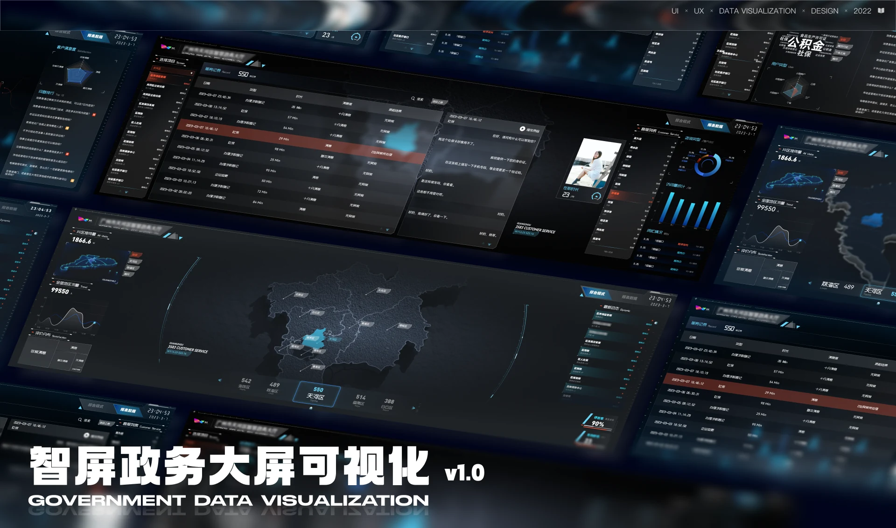
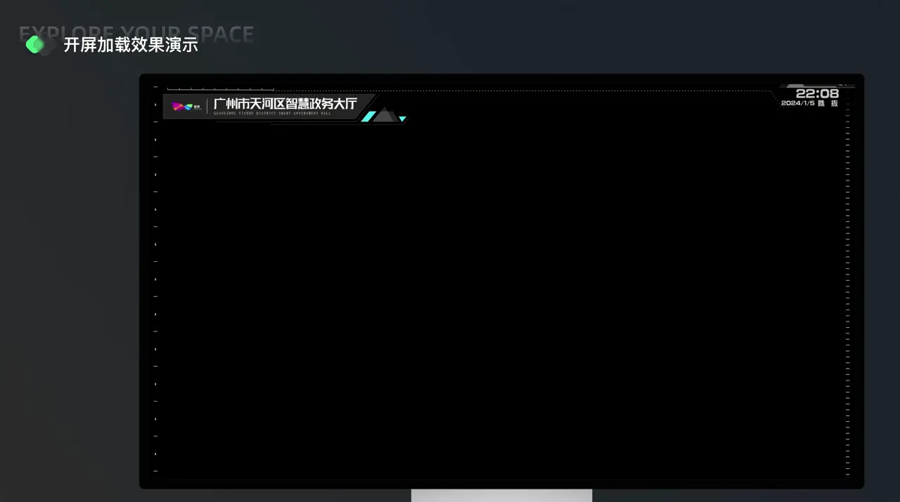
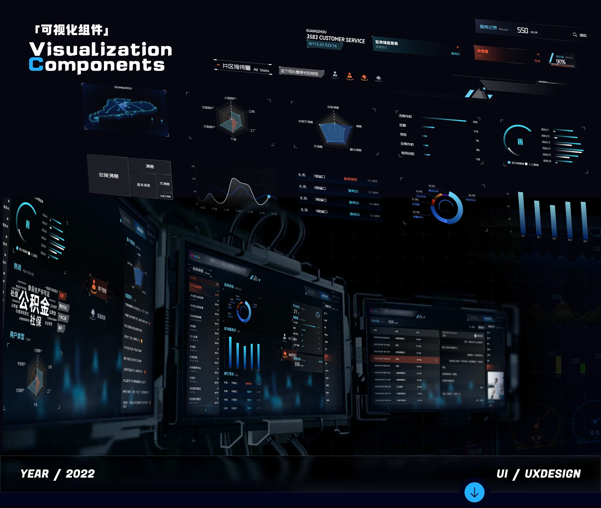
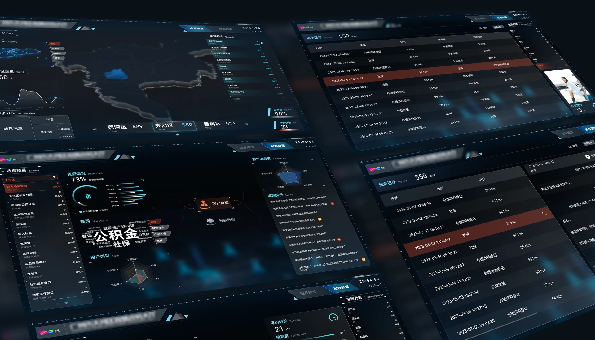

08 / Lab Project / 2021.07 - 2023.01
ZhiPing Smart Screen
Government services, custom-built for counter and command screen
Overview
ZhiPing serves bank counters, government offices and service centres. Hearing-impaired or ageing customers struggle to follow spoken instructions when handling business alone, so the product adds voice amplification and on-screen text as a hardware-software pair. The same work delivers a reusable visual language for government command screens.
Where counter service breaks down
Government counters run on spoken conversation. When a hearing-impaired or older customer handles business alone, every step — queueing, form filling, confirming an amount — needs a spoken reply, and one missed word stops the whole process. On the operations side, regional workload, service records and complaint tickets lived on separate dashboards, so duty staff had to stitch one picture together by switching between screens.
Accessibility built into software
Move the accessibility support into the counter device software instead of relying on staff writing notes by hand: voice amplification handles what cannot be heard, highlighted text handles what cannot be understood, and the tablet carries the procedure while the command screen carries regional status. The large screen follows a centre-map-plus-side-streams layout, keeping service volume, problem branches, complaint hotspots and satisfaction in one line of sight so duty staff can spot a backlog area immediately.
Scope
- Regional service-volume map and district switching
- Service records and handling-time trends
- Problem branches and top-10 issues
- Satisfaction and complaint ticket flow
- Counter tablet flow with communication support
Command-screen specification
Produced a reusable command-screen specification: the map anchors every spatial question, tables and trend charts share one grid and type scale, and dark surfaces with a single highlight colour keep numbers legible across a duty-room wall. The same tokens cover both the counter tablet and the command screen, so the two surfaces cannot drift apart.
What comes next
Next is linking the command screen to the counter tablet so forms and tickets appear in real time, and adding slots for speech-to-text and sign-language prompts to push accessibility from visible to actually usable.
My Role
Ran requirements analysis, prototyping and first-pass design; delivered the tablet visual design against those requirements; coordinated government and commercial styling for different clients; formed and led the team that built the command-screen cockpit.
Screens




Other work
- LKSY · All Platforms2024 - 2026
- KEKE · IP Design2025.03
- Changting Assistant App2020.01 - 2023.05
- XiaoWo Accessibility Call Assistant2020.01 - 2023.05
- Umeta 2.12023.07 - 2024.02
- Appleland Web2023.07 - 2024.02
- Modeller’s Circle2022.08 - 2023.01
- Corporate Website Design2020 - 2023
Have something to build?
Available for remote UI/UX design outsourcing and freelance work: B2B dashboards, WeChat mini programs, mobile interfaces, accessibility design, prototypes and design specs.
Email 965333099@qq.com · WeChat and phone 18666099550